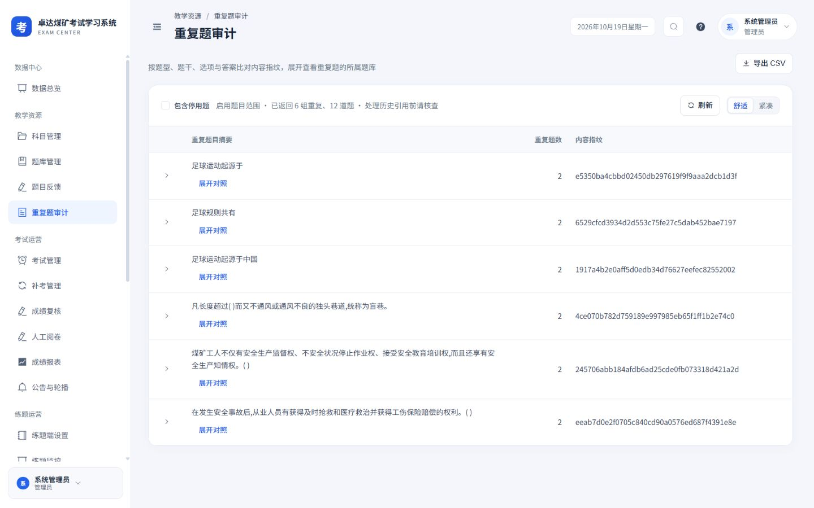
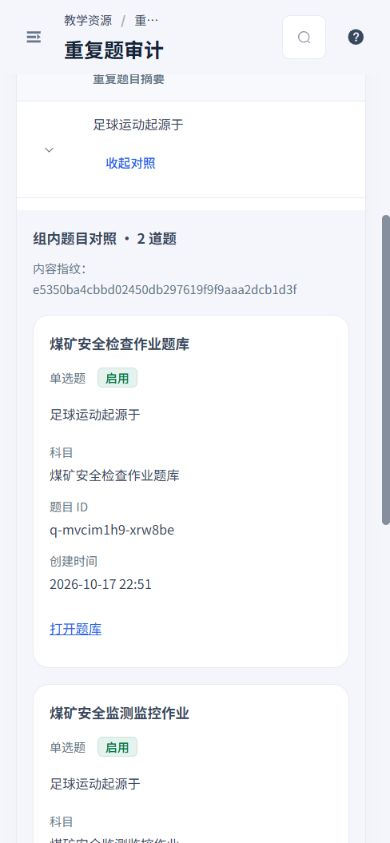
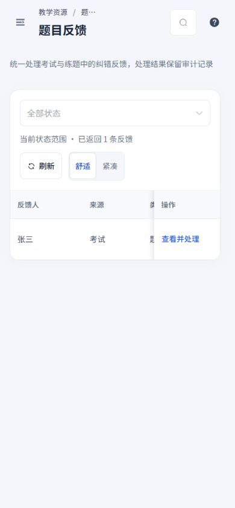
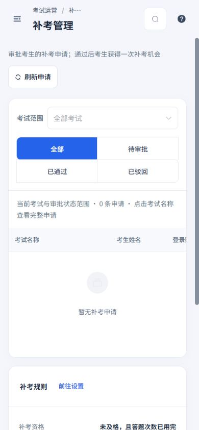
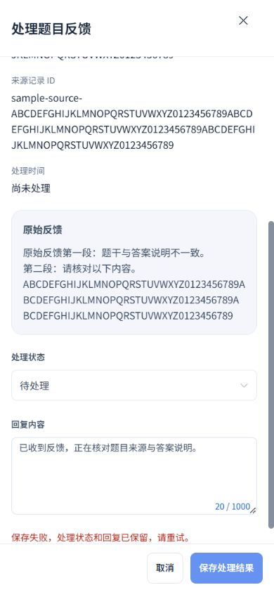
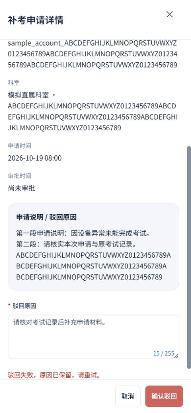
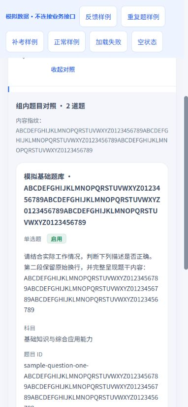

2026-10-19 · Workbuddy 01 · 本轮范围：题目反馈、重复题审计、补考管理
完整阅读上下文，手机直接处理，失败保留输入
沿用白侧栏、浅灰蓝底、蓝色操作与16 px卡片。补齐三页桌面与手机设计，详情字段、列表操作、异常反馈分别落实到实际组件。
本轮落地
- 题目反馈：处理入口固定在列表右侧。详情完整显示来源、类型、题目标识、来源记录、处理时间及处理人标识；原始反馈保留换行。保存失败就地提示，处理状态与回复保留，提交期间锁定操作和关闭。
- 重复题审计：组内宽表格改为题目卡片对照，桌面两列、手机单列；题干、题库、科目、题目ID、状态和创建时间完整显示。保留展开、收起、原题库链接及CSV字段；导出范围仍为全部返回记录。统计明确为当前启用题或含停用题范围的返回组数与题目数。
- 补考管理：点击考试名称可阅读完整申请，已处理记录可查看详情。驳回原因在详情内填写并校验，失败保留输入；通过审批保留确认。确认、校验及请求期间防止重复提交，保留考试与状态筛选，审批后回到有效页。
- 手机抽屉全屏、正文独立滚动、底部操作固定；修正通用样式优先级，使抽屉底部按钮达到44 px。长标识与段落完整换行，横屏正文仍有可用滚动空间。补考设置成功读取前显示未知，可单独重试。
权限角色、现有接口、审批规则、题型、考务和安全能力保持原有行为。
实际应用
以下来自本地实际应用与接口数据。反馈详情只查看后取消；没有修改反馈、通过或驳回真实申请。补考当前为空，保留真实空状态。









隔离长内容与失败恢复
以下使用实际页面组件与独立模拟接口，不连接业务接口。长题干、标识和失败信息均为模拟；提交只触发模拟失败。







验证结果
覆盖320×740、390×844、844×390、1440×900四种视口，共32组布局测量，另含一次浏览器必填拦截验证。实际三页、长内容展开、失败后抽屉、空状态和加载失败均已检查；页面无横向溢出，表格在卡片内横向滚动，手机抽屉底部按钮至少44 px且在视口内。
10个相关测试文件、103项测试通过，覆盖本轮三页、管理工作流、科室、安全日志、系统维护、全局样式与设计覆盖。类型检查及生产构建通过。重复提交、审批确认取消、失败重试、分页回退、CSV完整内容与原题库链接均有回归覆盖。
本报告仅记录本轮改动与验证范围；历史验收记录保留在总目录。当前为本地实现。